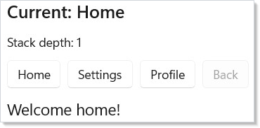
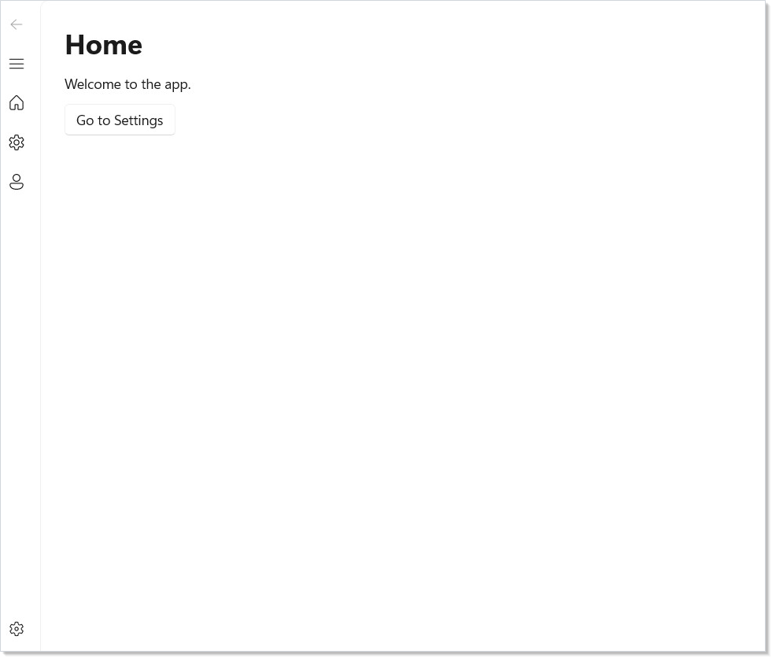
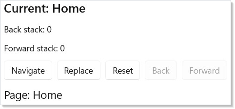
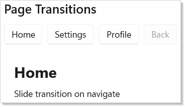
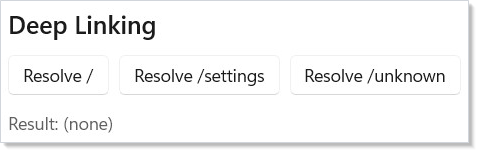
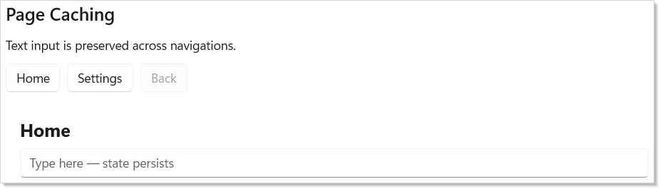
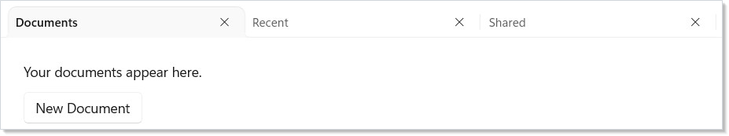
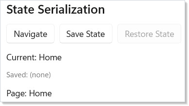

WinUI reference: For the full property surface and design guidance, see Navigation Basics.
Microsoft.UI.Reactor (Reactor)'s navigation is a stack of typed routes that lives in a hook. You
call UseNavigation(initialRoute) once, in a root component, and you get
back a NavigationHandle<TRoute> whose Navigate, GoBack, Replace,
and Reset methods mutate the stack. A NavigationHost reads the
current route on each render and projects it through a route =>
Element function, so the page tree is a pure function of the stack —
exactly the same shape as the rest of the framework. There is no
Frame.Navigate(typeof(Page)), no INotifyPropertyChanged on a
CurrentPage property, no NavigationService registered in DI. The
stack is state; the page is render output. That makes lifecycle
hooks (UseNavigationLifecycle) testable, deep links
(DeepLinkMap<TRoute>) trivially round-trippable through GetState /
SetState, and the back stack visible to your component code as a
plain IReadOnlyList<TRoute>. Read Defining Routes
first if you're new; the rest of the page composes against that one
shape.
Navigation¶
Reactor uses a stack-based navigation model with type-safe routes. You define
your routes as an enum, create a navigation handle with
UseNavigation, and render the current page with NavigationHost.
Defining Routes¶
Start by defining an enum for your pages:
Each enum value represents a distinct page in your app. The navigation system uses this type to ensure you can only navigate to valid routes. For pages that carry data — a detail page bound to a row ID, a wizard step with captured form state — use a discriminated-union pattern with C# records implementing a sealed interface instead of a flat enum.
Basic Navigation¶
Call UseNavigation(Route.Home) to create a navigation handle rooted at
your initial route. Use NavigationHost to render the current page:
class BasicNavDemo : Component
{
public override Element Render()
{
var nav = UseNavigation(Route.Home);
return VStack(12,
SubHeading($"Current: {nav.CurrentRoute}"),
TextBlock($"Stack depth: {nav.Depth}"),
HStack(8,
Button("Home", () => nav.Navigate(Route.Home)),
Button("Settings", () => nav.Navigate(Route.Settings)),
Button("Profile", () => nav.Navigate(Route.Profile)),
Button("Back", () => nav.GoBack())
.IsEnabled(nav.CanGoBack)
),
NavigationHost(nav, route => route switch
{
Route.Home => TextBlock("Welcome home!").FontSize(18).Padding(16),
Route.Settings => TextBlock("Settings page").FontSize(18).Padding(16),
Route.Profile => TextBlock("Your profile").FontSize(18).Padding(16),
_ => TextBlock("Not found").Padding(16)
})
).Padding(24);
}
}

Here is what each piece does:
UseNavigation(Route.Home)creates aNavigationHandle<Route>withHomeas the initial route. Call this once in your root component.nav.Navigate(route)pushes a new route onto the stack.nav.GoBack()pops the current route and returns to the previous one.NavigationHost(nav, route => ...)renders whichever element the route map returns for the current route.
Reference¶
| API | Shape | Purpose |
|---|---|---|
UseNavigation<TRoute>(initial) |
hook (root) | Create the navigation handle for this subtree. |
UseNavigation<TRoute>() |
hook (descendant) | Read the ancestor handle via context. |
UseNavigationLifecycle(...) |
hook | Page-side onNavigatedTo / onNavigatingFrom / onNavigatedFrom. The from callback receives a context with .Cancel(). |
UseSystemBackButton(nav, window) |
hook | Wire the title-bar / hardware Back button to nav.GoBack. |
NavigationHost(nav, routeMap) |
element | Renders the current route. Set Transition, CacheMode, CacheSize. |
NavigationView(items, content) |
element | Sidebar shell. Use .SelectedTagChanged(handler) for selection events. |
TabView(tabs) |
element | Parallel workspaces; tabs keep their own state. |
BreadcrumbBar(items) |
element | Trail of ancestor routes for drill-down nav. |
Frame(...) |
element | Raw WinUI Frame for XAML-page interop; .Navigating, .Navigated, .NavigationFailed. |
DeepLinkMap<TRoute> |
type | URI pattern → route factory. .Resolve(uri) returns the matched route and back-stack. |
NavigationDiagnostics |
static | Static events for tracing: NavigationRequested, NavigationCompleted, NavigationCancelled, cache and transition events. |
NavigationView¶
NavigationView creates a sidebar menu with icons. Pair it with
NavigationHost for a standard app layout:
class NavViewDemo : Component
{
public override Element Render()
{
var nav = UseNavigation(Route.Home);
return NavigationView(
[
NavItem("Home", icon: "Home", tag: "Home"),
NavItem("Settings", icon: "Setting", tag: "Settings"),
NavItem("Profile", icon: "Contact", tag: "Profile")
],
content: NavigationHost(nav, route => route switch
{
Route.Home => VStack(12, Heading("Home"),
TextBlock("Welcome to the app."),
Button("Go to Settings",
() => nav.Navigate(Route.Settings))).Padding(24),
Route.Settings => VStack(12, Heading("Settings"),
TextBlock("Configure your preferences."),
Button("Back", () => nav.GoBack())).Padding(24),
Route.Profile => VStack(12, Heading("Profile"),
TextBlock("View your profile info.")).Padding(24),
_ => TextBlock("Not found").Padding(24)
})
);
}
}

NavItem takes a label, an optional icon name (from the Segoe Fluent Icons
font), and an optional tag string. The NavigationView handles selection
state and displays the content you pass.
Stack Operations¶
The NavigationHandle supports several stack manipulation methods beyond
simple push and pop:
class StackOperationsDemo : Component
{
public override Element Render()
{
var nav = UseNavigation(Route.Home);
return VStack(12,
SubHeading($"Current: {nav.CurrentRoute}"),
TextBlock($"Back stack: {nav.BackStack.Count}"),
TextBlock($"Forward stack: {nav.ForwardStack.Count}"),
HStack(8,
Button("Navigate", () =>
nav.Navigate(Route.Settings)),
Button("Replace", () =>
nav.Replace(Route.Profile)),
Button("Reset", () =>
nav.Reset(Route.Home)),
Button("Back", () => nav.GoBack())
.IsEnabled(nav.CanGoBack),
Button("Forward", () => nav.GoForward())
.IsEnabled(nav.CanGoForward)
),
NavigationHost(nav, route =>
TextBlock($"Page: {route}")
.FontSize(18).Padding(16))
).Padding(24);
}
}

| Method | Effect |
|---|---|
Navigate(route) |
Push route onto back stack, navigate to it |
GoBack() |
Pop current, return to previous |
GoForward() |
Move forward (after going back) |
Replace(route) |
Swap current route without touching the stack |
Reset(route) |
Clear all stacks, start fresh at route |
PopTo(predicate) |
Pop until a matching route is found |
Use CanGoBack and CanGoForward to enable/disable navigation buttons.
Page Lifecycle¶
UseNavigationLifecycle lets a component react to navigation events. Use it
to load data when a page appears or save state when it disappears:
class LifecyclePage : Component
{
public override Element Render()
{
var (log, updateLog) = UseReducer(new List<string>());
UseNavigationLifecycle(
onNavigatedTo: ctx =>
updateLog(l => [.. l,
$"Arrived from {ctx.PreviousRoute}"]),
onNavigatingFrom: ctx =>
updateLog(l => [.. l,
$"Leaving to {ctx.TargetRoute}"]),
onNavigatedFrom: ctx =>
updateLog(l => [.. l,
$"Left for {ctx.TargetRoute}"])
);
return VStack(8,
SubHeading("Lifecycle Events"),
VStack(4,
log.TakeLast(5).Select(entry =>
TextBlock(entry).FontSize(12).Opacity(0.7)
).ToArray()
)
).Padding(16);
}
}
The four callbacks fire at different points:
| Callback | When it fires |
|---|---|
onNavigatingTo |
Before this page becomes active. Call ctx.Cancel() to reject from the destination side. |
onNavigatedTo |
After this page becomes active |
onNavigatingFrom |
Before leaving this page. Call ctx.Cancel() to block — the classic "unsaved changes" guard. |
onNavigatedFrom |
After this page is no longer active |
Use onNavigatedTo to fetch data or start timers. Use onNavigatingFrom to
save drafts or confirm unsaved changes — call ctx.Cancel() on the
NavigatingFromContext to prevent navigation entirely. See
Effects and Lifecycle for more on lifecycle patterns and
async cancellation.
Caveat:
Reset(route),Replace(route), andPopTo(predicate)all run theonNavigatingFromguard —ctx.Cancel()will block them. ButSetState(state)does not: it routes throughNavigationStack.RestoreStatewhich bypassesInvokeGuardentirely and firesNavigatedwithNavigationMode.Resetafter the stacks are already rewritten. If your unsaved-changes guard lives only inonNavigatingFrom, an app that restores a saved navigation state from disk on launch will silently overwrite the active page without ever asking the user. Either gate state restoration explicitly (check the in-memory dirty flag before callingSetState), or surface the same dirty check from a higher level — e.g. an app-shutdown handler inWindow.Closed.
Page Transitions¶
NavigationHost supports animated page transitions. Set the Transition
property to control how pages animate in and out:
class PageTransitionsDemo : Component
{
public override Element Render()
{
var nav = UseNavigation(Route.Home);
return VStack(12,
SubHeading("Page Transitions"),
HStack(8,
Button("Home", () => nav.Navigate(Route.Home)),
Button("Settings", () => nav.Navigate(Route.Settings)),
Button("Profile", () => nav.Navigate(Route.Profile)),
Button("Back", () => nav.GoBack())
.IsEnabled(nav.CanGoBack)
),
NavigationHost(nav, route => route switch
{
Route.Home => VStack(8,
TextBlock("Home").FontSize(24).Bold(),
TextBlock("Slide transition on navigate")).Padding(16),
Route.Settings => VStack(8,
TextBlock("Settings").FontSize(24).Bold(),
TextBlock("DrillIn transition to detail")).Padding(16),
_ => TextBlock($"{route}").FontSize(18).Padding(16)
}) with { Transition = NavigationTransition.DrillIn() }
).Padding(24);
}
}

| Transition | Effect |
|---|---|
NavigationTransition.Slide() |
Slide + fade (default) |
NavigationTransition.Fade() |
Crossfade |
NavigationTransition.DrillIn() |
Scale + fade from center |
NavigationTransition.Spring() |
Spring-physics slide |
NavigationTransition.None |
Instant swap |
Transitions run on the compositor thread — no managed-code involvement during playback. GoBack automatically reverses the direction. See Animation for more on compositor transitions.
Deep Linking¶
DeepLinkMap maps URI patterns to route constructors. Use it to restore
navigation state from activation URIs or protocol handlers:
class DeepLinkingDemo : Component
{
public override Element Render()
{
var map = UseMemo(() => new DeepLinkMap<Route>()
.Map("/", _ => Route.Home)
.Map("/settings", _ => Route.Settings)
.Map("/profile", _ => Route.Profile));
var (result, setResult) = UseState("(none)");
return VStack(12,
SubHeading("Deep Linking"),
HStack(8,
Button("Resolve /", () =>
setResult($"/ -> {map.Resolve("/").Matched}")),
Button("Resolve /settings", () =>
setResult($"/settings -> {map.Resolve("/settings").Matched}")),
Button("Resolve /unknown", () =>
setResult($"/unknown -> {map.Resolve("/unknown").Matched}"))
),
TextBlock($"Result: {result}").FontSize(14).Opacity(0.7)
).Padding(24);
}
}

Pattern segments support rich matching:
| Segment | Matches |
|---|---|
/literal |
Exact match |
/{param} |
Captures a string |
/{param:int} |
Typed capture (int, long, bool, Guid) |
/{param?} |
Optional parameter |
/{**} |
Wildcard — matches remaining path |
?key=value |
Query string parameters |
Use RouteArgs.Get<T>(name) for required params, RouteArgs.GetOrDefault<T>(name)
for optional ones, and RouteArgs.Query<T>(name) for query string values.
The backStackFactory parameter builds a synthetic back stack so GoBack works
even after deep-linked entry.
class DeepLinkQueryDemo : Component
{
public override Element Render()
{
var (info, setInfo) = UseState("(none)");
// RouteArgs are available inside the factory lambda —
// capture typed params and query values there
var map = UseMemo(() => new DeepLinkMap<Route>()
.Map("/", _ => Route.Home)
.Map("/settings", _ => Route.Settings)
.Map("/users/{id:int}/posts/{postId:int}",
args =>
{
var userId = args.Get<int>("id");
var postId = args.Get<int>("postId");
var sort = args.Query<string>("sort");
setInfo($"userId={userId}, postId={postId}, sort={sort}");
return Route.Details;
},
() => new[] { Route.Home })
);
return VStack(12,
SubHeading("Deep Link Query Params"),
Button("Resolve /users/42/posts/7?sort=date", () =>
map.Resolve("/users/42/posts/7?sort=date")),
TextBlock($"Captured: {info}").FontSize(14).Opacity(0.7)
).Padding(24);
}
}
This example shows query parameters and optional path segments. The resolver
parses /users/42/posts?sort=date&page=2 into typed values you can use
directly in route constructors.
Page Caching¶
Set CacheMode on NavigationHost to preserve page state across
navigations. Cached pages keep their visual tree alive instead of remounting:
class PageCachingDemo : Component
{
public override Element Render()
{
var nav = UseNavigation(Route.Home);
return VStack(12,
SubHeading("Page Caching"),
TextBlock("Text input is preserved across navigations."),
HStack(8,
Button("Home", () => nav.Navigate(Route.Home)),
Button("Settings", () => nav.Navigate(Route.Settings)),
Button("Back", () => nav.GoBack())
.IsEnabled(nav.CanGoBack)
),
NavigationHost(nav, route => route switch
{
Route.Home => CachedPage("Home"),
Route.Settings => CachedPage("Settings"),
_ => TextBlock($"{route}").Padding(16)
}) with
{
CacheMode = NavigationCacheMode.Enabled,
CacheSize = 5
}
).Padding(24);
}
static Element CachedPage(string name) =>
VStack(8,
TextBlock(name).FontSize(20).Bold(),
TextBox("", _ => { }, placeholderText: "Type here — state persists")
).Padding(16);
}

| Cache mode | Behavior |
|---|---|
Disabled |
Always unmount/remount (default) |
Enabled |
LRU cache up to CacheSize entries |
Required |
Always cached, never evicted |
Caching preserves scroll position, text input, and component state. Use it
for pages that are expensive to render or where losing state would frustrate
the user. Required is the right choice for a small fixed set of always-hot
pages (an app's three tab panes); for an unbounded route space (a detail
page parameterized by row ID), stick with Enabled and tune CacheSize —
Required never evicts and will retain every visited route's element tree
for the process lifetime.
TabView¶
For tab-based navigation, use TabView with Tab items. Each tab holds its
own content independently:
class TabNavDemo : Component
{
public override Element Render()
{
return TabView(
Tab("Documents",
VStack(12,
TextBlock("Your documents appear here."),
Button("New Document", () => { })
).Padding(24)
),
Tab("Recent",
VStack(12,
TextBlock("Recently opened files."),
TextBlock("No recent files.").Opacity(0.5)
).Padding(24)
),
Tab("Shared",
VStack(12,
TextBlock("Files shared with you."),
TextBlock("Nothing shared yet.").Opacity(0.5)
).Padding(24)
)
);
}
}

Unlike stack-based navigation, tabs keep all their content alive simultaneously. Use tabs when users need to switch freely between parallel workspaces.
State Serialization¶
NavigationHandle can capture and restore the full navigation state —
back stack, current route, and forward stack — as a plain
NavigationState<TRoute> snapshot. Reactor intentionally does not
pick a serialization format: persist the snapshot however you like
(JSON via your own source-gen context, MessagePack, hand-rolled binary).
class StateSerializationDemo : Component
{
public override Element Render()
{
var nav = UseNavigation(Route.Home);
var (savedJson, setSavedJson) = UseState<string?>(null);
return VStack(12,
SubHeading("State Serialization"),
HStack(8,
Button("Navigate", () =>
nav.Navigate(Route.Settings)),
Button("Save State", () =>
setSavedJson(System.Text.Json.JsonSerializer.Serialize(
nav.GetState(), DocsNavJsonContext.Default.NavigationStateRoute))),
Button("Restore State", () =>
{
if (savedJson is not null)
{
var state = System.Text.Json.JsonSerializer.Deserialize(
savedJson, DocsNavJsonContext.Default.NavigationStateRoute);
if (state is not null) nav.SetState(state);
}
}).IsEnabled(savedJson is not null)
),
TextBlock($"Current: {nav.CurrentRoute}"),
TextBlock($"Saved: {savedJson?[..Math.Min(50, savedJson?.Length ?? 0)] ?? "(none)"}")
.FontSize(12).Opacity(0.6),
NavigationHost(nav, route =>
TextBlock($"Page: {route}").Padding(16))
).Padding(24);
}
}
[System.Text.Json.Serialization.JsonSerializable(typeof(NavigationState<Route>))]
partial class DocsNavJsonContext : System.Text.Json.Serialization.JsonSerializerContext { }

GetState() returns a NavigationState<TRoute> record. SetState(state)
restores the stacks and fires Navigated with Reset mode. The record
carries [JsonPropertyName] metadata so a one-line
JsonSerializer.Serialize(snapshot, MyJsonContext.Default.NavigationStateRoute)
gives you camelCase JSON for free — fully AOT-safe when paired with a
JsonSerializerContext. For polymorphic route hierarchies, mark the base
type with [JsonPolymorphic] and [JsonDerivedType] so the round trip
preserves the discriminator.
Frame Events¶
When you embed a raw WinUI Frame for interop with XAML pages (instead of
using NavigationHost), the navigation lifecycle is exposed through fluent
event extensions:
class FrameEventsDemo : Component
{
public override Element Render()
{
var (log, updateLog) = UseReducer(new List<string>());
return VStack(8,
SubHeading("Frame events"),
Frame(sourcePageType: typeof(DocsFrameDemoPage))
.Navigating(target =>
updateLog(l => [.. l, $"Navigating to {target.Name}"]))
.Navigated(target =>
updateLog(l => [.. l, $"Arrived at {target.Name}"]))
.NavigationFailed((target, ex) =>
updateLog(l => [.. l, $"Failed {target.Name}: {ex.Message}"]))
.Height(300),
VStack(4, log.TakeLast(6).Select(
entry => TextBlock(entry).FontSize(11).Opacity(0.6)
).ToArray())
).Padding(24);
}
}
| Fluent | Fires |
|---|---|
.Navigating(handler) |
Before navigating away from the current page |
.Navigated(handler) |
After the new page has been shown |
.NavigationFailed(handler) |
If page construction throws — receives the target type and the exception |
The underlying init properties (OnNavigating, OnNavigated,
OnNavigationFailed) are still available for record-construction syntax.
The fluent extensions drop the leading On — see
spec 039 §0.1 for the C# naming
constraint that drove that convention.
NavigationView.SelectedTagChanged¶
NavigationView has a matching fluent for the tag-changed callback, which
fires whenever the user picks a different NavItem:
class SelectedTagChangedDemo : Component
{
public override Element Render()
{
var nav = UseNavigation(Route.Home);
var (lastTag, setLastTag) = UseState<string?>(null);
return NavigationView(
[
NavItem("Home", icon: "Home", tag: "Home"),
NavItem("Settings", icon: "Setting", tag: "Settings")
],
content: VStack(12,
Heading(lastTag ?? "Home"),
TextBlock("Last selected tag: " + (lastTag ?? "(none)"))
.Opacity(0.6)
).Padding(24)
).SelectedTagChanged(tag =>
{
setLastTag(tag);
if (tag == "Settings") nav.Navigate(Route.Settings);
});
}
}
SelectedTagChanged receives the tag string (or null if no item is
selected). Passing null to the fluent clears any previously-set handler.
Navigation Diagnostics¶
NavigationDiagnostics exposes static events for debugging and telemetry.
Subscribe to trace navigation activity without modifying page code:
class DiagnosticsDemo : Component
{
public override Element Render()
{
var nav = UseNavigation(Route.Home);
var (log, updateLog) = UseReducer(new List<string>());
UseEffect(() =>
{
EventHandler<NavigationDiagnosticEvent> onRequested =
(_, e) => updateLog(l => [.. l, $"Requested: {e.From} → {e.To}"]);
EventHandler<NavigationDiagnosticEvent> onCompleted =
(_, e) => updateLog(l => [.. l, $"Completed: {e.To}"]);
NavigationDiagnostics.NavigationRequested += onRequested;
NavigationDiagnostics.NavigationCompleted += onCompleted;
return () =>
{
NavigationDiagnostics.NavigationRequested -= onRequested;
NavigationDiagnostics.NavigationCompleted -= onCompleted;
};
});
return VStack(12,
SubHeading("Navigation Diagnostics"),
HStack(8,
Button("Home", () => nav.Navigate(Route.Home)),
Button("Settings", () => nav.Navigate(Route.Settings))
),
VStack(4, log.TakeLast(6).Select(
entry => TextBlock(entry).FontSize(11).Opacity(0.6)
).ToArray()),
NavigationHost(nav, route =>
TextBlock($"Page: {route}").Padding(16))
).Padding(24);
}
}
| Event | Fires when |
|---|---|
NavigationRequested |
A navigation is about to start |
NavigationCompleted |
A page has finished loading |
NavigationCancelled |
A lifecycle guard cancelled the navigation |
| Cache events | Page cached, evicted, or hit |
| Transition events | Transition started or completed |
Events fire synchronously on the UI thread. Use them for development logging, analytics, or custom progress indicators.
Patterns¶
Guarded leave on a dirty form¶
The canonical use of onNavigatingFrom is the "unsaved changes" guard.
Track a dirty boolean alongside form state with UseState,
and reject the navigation when the user tries to leave with pending
edits. Prompt the user with a ContentDialog;
if they choose Discard, set dirty = false and call nav.GoBack()
again — the second call sees a clean form and succeeds. The recipe at
recipes/multi-step-form wires the same
shape across a wizard.
Restoring scroll position per route¶
Page caching preserves the element tree, but Disabled mode does not —
remount means a fresh ScrollView. When CacheMode = Disabled is the
right shape (memory-bounded apps, dynamic routes), keep a
Dictionary<TRoute, double> of scroll offsets in a
UseRef at the navigation host's parent, save the
offset in onNavigatingFrom, and restore it in a
UseEffect on the page that runs after the
ScrollView mounts. Pair with VirtualListRef.RestoreScrollOffset for
virtualized lists.
Deep link → typed route, with back stack¶
Deep linking by default lands the user on the matched route with an
empty back stack — Back goes nowhere. Pass backStackFactory to
DeepLinkMap.Map(...) to synthesize the stack the user would have
built up if they'd navigated naturally. For /users/42/posts/7, the
factory should return [Route.Home, Route.UserList,
Route.UserDetail(42)] so the user can drill back up the hierarchy.
Common Mistakes¶
Reading routes from a string-typed prop¶
// Don't:
class Shell : Component<ShellProps>
{
public override Element Render()
{
return Props.CurrentRoute switch
{
"home" => Home(),
"settings" => Settings(),
...
};
}
}
A string-routed shell loses every type-safety win the navigation system provides. The compiler can't catch a typo; the analyzer can't warn about an unreachable route; refactoring rename is a grep. Use the enum (or record-union) form the Defining Routes section shows — the route map's exhaustiveness check is in the C# switch expression.
Treating UseNavigation like a singleton¶
// Don't:
public static NavigationHandle<Route>? Nav;
class Shell : Component
{
public override Element Render()
{
var nav = UseNavigation(Route.Home);
Nav = nav; // capture for later use from anywhere
return ...;
}
}
The handle is bound to the dispatcher of the component that created
it. As of issue #234 the mutators (Navigate, GoBack, GoForward,
Replace, Reset, PopTo, SetState) are thread-safe by default:
calling Nav.Navigate(...) from a background timer or a closure that
runs off the UI thread auto-marshals the navigation onto that captured
dispatcher — mirroring the UseState / UseReducer contract (see
Threading and Dispatch). If the dispatcher
was never captured, or has already shut down, the call throws
InvalidOperationException loudly rather than silently corrupting the
back/forward stacks. Stashing the handle in a static is still a smell
— it outlives the page and leaks the dispatcher it captured — so prefer
UseNavigation<TRoute>() (no initial value) in a descendant component
to access the same handle via context, or pass the handle through
Context explicitly.
Forgetting UseSystemBackButton¶
Without UseSystemBackButton(nav, window), the title-bar Back arrow
and hardware Back key on touch devices do not trigger nav.GoBack —
they fall through to the OS default, which closes the window on the
root page. Wire UseSystemBackButton once at the same scope where
you call UseNavigation(initial); the back arrow becomes
nav.GoBack and the visibility tracks nav.CanGoBack.
Tips¶
Use enums for routes. Enums give you compile-time safety — you cannot navigate to a route that does not exist. For routes that carry data (like a detail page ID), use a discriminated union pattern with records.
Call UseNavigation(initial) once at the root. Child components access
the same handle with UseNavigation<Route>() (no initial value). This
retrieves the nearest ancestor's handle via context.
Use NavigationTransition.DrillIn() for list-to-detail flows. It
signals hierarchy and pairs naturally with Connected Animation keys.
Use Reset for sign-out flows. It clears the entire stack and starts
fresh, preventing the user from navigating back to authenticated pages.
Pair UseSystemBackButton with your nav handle. Call
UseSystemBackButton(nav, window) to wire the system back button (title bar
or hardware) to your navigation stack automatically.
Next Steps¶
- Collections — Next: render data-driven lists and grids within pages
- Styling and Theming — apply visual styles and themes across pages
- Context — share navigation handles and other state across the component tree
- Effects and Lifecycle — run side effects when pages appear or disappear
- Animation — combine page transitions with enter/exit animations
- Data System — data grids with sort, filter, and inline editing
- Dialogs and Flyouts — prompt the user from inside a navigation guard